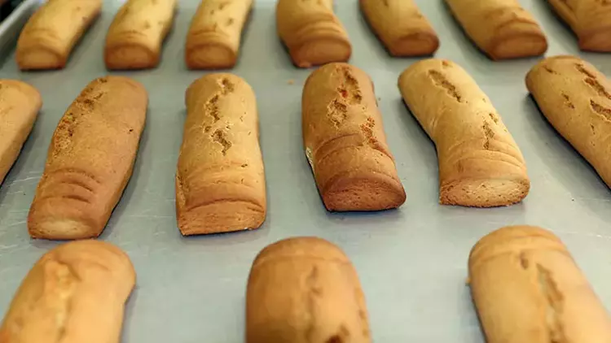

Enişte Lokumu
Rize Enişte Lokumu; Rize ilinde uzun yıllardır düğünlerde davetliler için hazırlanan ve ayrıca düğün sonrasında damada gönderilen bohça içinde yer alan uzunluğu 15 cm, kalınlığı 2 cm ve ağırlığı 130 (±5) g olan rulo şeklindeki kurabiyedir.

Geçmişi 1800’lü yıllara dayanan Rize Enişte Lokumu, Rize ilinin sadece mutfak kültüründe değil, evlenme gelenekleri arasında da önemli bir yere sahiptir. Rize Enişte Lokumu; düğün merasimleri sırasında hazırlanan damat bohçası içinde yer alır ve gelinin baba evine her gidişinde yine bohça içinde damat evine gönderilir. Eskiden sadece evlerde üretilen bu ürün günümüzde ticari amaçla üretilmekte ve ilgi görmektedir.
Tarif
Malzemeler
- 1 kase tereyağ
- 1 kase şeker
- Şekerin yarısı kadar yoğurt
- 1 adet yumurta sarısı
- çay kaşığının yarısı kadar karbonat
- Aldığı kadar un
Yapılışı
- Eritilmiş tereyağına şekeri ekliyoruz Önce elimiz daha sonra mikser yardımı ile çırpıyoruz. Kabınızın derin veya kapaklı olmasına dikkat edin zira tereyağ her yere bulaşıyor.
- Daha sonra yoğurdu yumurta sarısını ve karbonatı ekleyip elimizle hafifçe karıştırıyoruz.
- En son aldığı kadar unu ( bende yaklaşık 10 tepeleme yemek kaşığı ) ekliyoruz
- 150 ° fırında 10-15 dakika pembeleşinceye kadar tutuyoruz.
.png)